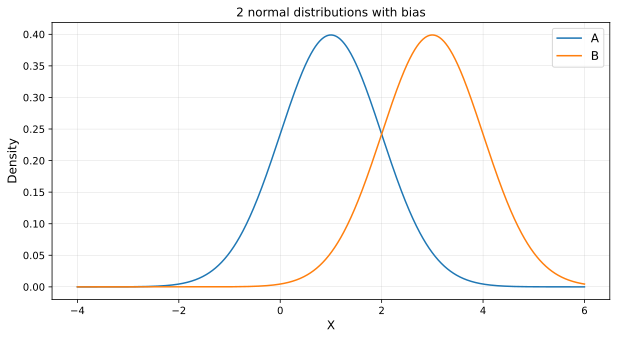
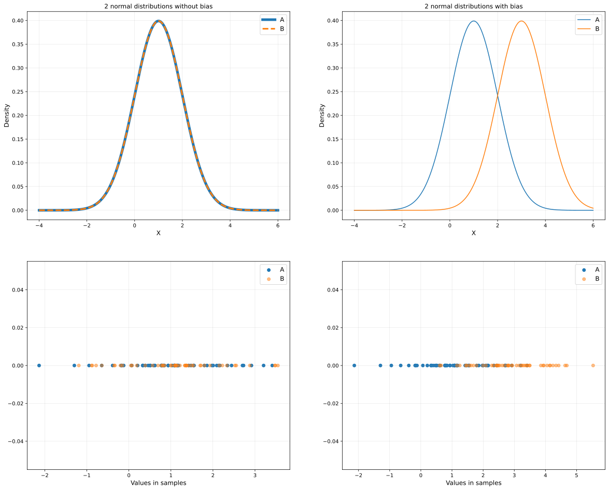
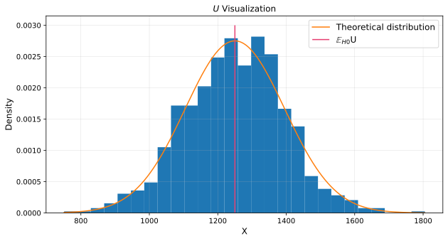
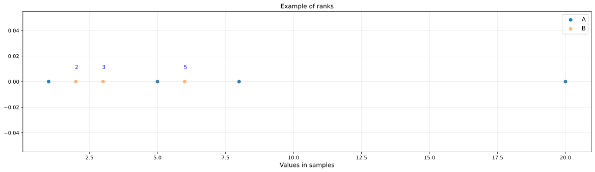

Mann — Whitney U-test
Applied Statistics
Ihor Miroshnychenko
Kyiv School of Economics
Basic concepts
This time, let’s invent a new homogeneity criterion that tests the bias of one sample relative to another.
Recall the null hypothesis of the homogeneity test:
\[ H_0: F = G,\ vs. H_1: F \neq G \]
where \(F\), \(G\) are distribution functions of 2 samples.
Previously, we have relied on the values of the sample items; this time, it is suggested to look not at the values themselves but at their order relative to each other.
Mann — Whitney U-test

Idea: Let’s count the number of pairs where the orange element is larger than the blue element; if there are many or few such pairs, then one sample will be biased relative to the other.
\[ \begin{align} U = \sum_{i}^N\sum_{j}^M I[A_i < B_j] \end{align} \]
where \(A_1, ..., A_N\) — the first sample, \(B_1, ..., B_M\) — the second sample, \(I\) — an indicator function which is 1 if the condition in parentheses is met, and 0 otherwise.
Count the number of pairs
If \(H_0\) is true, then the number of pairs where \(A_i < B_j\) should be close to \(n \times m / 2\).
- \(n\) = 50
- \(m\) = 50
So the expected value of \(U\) is \(50 \times 50 / 2 = 1250\).
But in our case, \(U\) = 2205.
We need to figure out if 2205 is a lot or a little.
U-distribution for case

Quantile: 955.925 - 1532.05
\(U\) = 2205 is in the tail of the distribution, which means that the null hypothesis is rejected.
But this will work only for this case. We need a more general approach.
Mann — Whitney U-test
\[ \begin{align} &U \overset{H_0}\rightarrow \mathcal{N}(\mathbb{E}U, \mathbb{D}U), \text{where}\\ &U = \sum_{i}^N\sum_{j}^M I[A_i < B_j],\\ &\mathbb{E} U = \dfrac{NM}{2},\\ &\mathbb{D}U = \dfrac{NM(N + M + 1)}{12} \end{align} \]

The minus of our current solution is that it takes a long time to run, specifically in quadratic time.
Speeding up the calculation: ranks
Idea on how to speed up the criterion: let’s organize all the elements in the graph below—the leftmost element — first, the next — second, etc. Let’s call these numbers ranks.
\(A = \color{#181485}{[1, 5, 8, 20]}\)
\(B = \color{#FFA500}{[2, 3, 6]}\)
\(A \& B = [\color{#181485}1, \color{#FFA500}2, \color{#FFA500}3, \color{#181485}5, \color{#FFA500}6, \color{#181485}8, \color{#181485}20]\)

\(R_j\) is the rank of \(B_j\) in the sample \((A_1,\ ...,\ A_N,\ B_1,\ ...,\ B_M)\).
\(V = R_1 +\ ...\ ...\ + R_M\).
Idea \(V\): the more biased one sample is relative to another, the greater/smaller the sum of ranks of one sample.
\[U = V - \dfrac{M (M + 1)}{2}\]
Algorithm of the Mann — Whitney U-test
Hypothesis to be tested: \(H_0: F=G,\ vs.\ H_1: F \neq G\).
The sample ranks \(A_1,\ ...\ A_N,\ B_1,\ ...\ B_M\) are calculated.
All ranks of sample \(B\) are saved: this is sample \(R\).
The sum of the ranks of sample \(B\) in the list \(A \& B\) is taken: \(V = R_1 +\ ...\ ...\ + R_M\). The statistic \(U = V - \dfrac{M (M + 1)}{2}\) is calculated
The expected value and variance under \(H_0\), are calculated: \[ \begin{align} &\mathbb{E} U = \dfrac{NM}{2},\\ &\mathbb{D} U = \dfrac{NM(N + M + 1)}{12} \end{align} \]
\(U \overset{H_0}\rightarrow \mathcal{N}(\mathbb{E}U, \mathbb{D}U)\). Quantiles are calculated from this distribution.

Applied Statistics